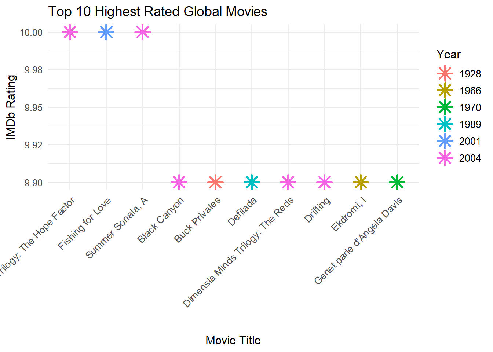

# 1. Global movies verisini yükle
load("movies.RData")
# 2. Turkish movies verisini oku
turkish_movies <- read.csv("final_dataset.csv", fileEncoding = "UTF-8")
# 3. Turkish movies verisini genişlet
turkish_movies_expanded <- data.frame(
title = turkish_movies$localized.title,
year = as.integer(turkish_movies$runtimes),
length = as.integer(turkish_movies$runtimes),
budget = NA,
rating = turkish_movies$rating,
votes = NA,
r1 = NA, r2 = NA, r3 = NA, r4 = NA, r5 = NA,
r6 = NA, r7 = NA, r8 = NA, r9 = NA, r10 = NA,
mpaa = NA,
Action = NA, Animation = NA, Comedy = NA, Drama = NA,
Documentary = NA, Romance = NA, Short = NA,
country = "Turkey"
)
# 4. Global movies'a country kolonu ekle
movies$country <- "Global"
# 5. Kolon sıralarını eşitle
turkish_movies_expanded <- turkish_movies_expanded[, names(movies)]
# 6. İkisini birleştir
combined_movies <- rbind(movies, turkish_movies_expanded)
# 7. Kaydet
save(combined_movies, file = "combined_movies.RData")
# 8. CSV de oluştur
write.csv(combined_movies, file = "combined_movies.csv", row.names = FALSE)Project Genre Matters: Exploring Film Audience Preferences
Welcome to our project page.
Begüm ÇORUH & Eda GÖNEN
Keep an eye on this space to stay updated with my project activities.
1.Project Overview and Scope
In this project, we aim to analyze how different movie genres perform in terms of audience preferences. Our primary focus is to identify genre-based patterns in film popularity and ratings, using a data-driven approach. To make the analysis more meaningful and localized, we enriched a widely-used global movie dataset by merging it with a Turkish-specific movie dataset. Through this project, we plan to discover whether certain genres are more successful among audiences and if factors like production year, runtime, or budget have a significant effect on genre-based popularity.
2.Data
We based our analysis on a combined dataset. The core dataset is ggplot2movies, which includes information about thousands of films worldwide.
To create a more localized perspective, we merged this dataset with a Turkish movie dataset.
The combined data allowed us to create new variables, such as Turkish-specific ratings and popularity scores, which we will use in our comparative analysis.
2.1 Data Source
The global movie data is sourced from the open-access ggplot2movies dataset, widely used in data analysis and visualization projects.
The Turkish-specific data was obtained from Kaggle, specifically from the Turkish Movies Dataset shared by Emre Okçular.
Both datasets provide rich information such as film titles, genres, production years, runtimes, IMDb ratings, and other useful attributes for our analysis.
2.2 Reasons of Choice
We selected this dataset because it offers a rich and diverse set of information about movies across different genres and periods. The global ggplot2movies dataset provides a well-organized structure for large-scale analysis, while the Turkish Movies dataset adds a localized dimension to the study, making it more relevant to regional audience preferences. The combination of both datasets allows us to explore general trends as well as cultural differences in movie genre popularity. Moreover, the variety of available variables such as genre, rating, year, runtime, and awards creates multiple opportunities for deeper analytical approaches.
2.3 Data Combination Process & Preprocessing
To create a comprehensive and diverse dataset, we combined two different sources.
First, we imported the original ggplot2movies dataset, which contains global movie information including variables such as title, year, length, budget, rating, votes, and genre indicators.
Second, we processed a Turkish movie dataset, cleaned it, and expanded its structure to match the global dataset’s format.
We standardized column names, added missing fields where necessary (e.g., budget, votes, genre dummies), and included a country variable to distinguish between Global and Turkish movies.
After ensuring consistency across both datasets, we merged them into a single, unified dataset named combined_movies.
This final dataset preserves authentic movie titles and metadata while also incorporating localized Turkish film information, making it suitable for international and regional analyses.
The combined dataset was saved in both .RData and .csv formats for flexibility in further exploration and analysis.
2.4 Data Summary
The final dataset combines global and Turkish movies, resulting in a comprehensive collection of approximately 8,000 films.
It includes a wide range of information for each movie, covering basic metadata, audience ratings, and genre classifications.
The following code blocks provide an overview of the combined movies dataset, including its structure, dimensions, variable names, sample records, and distribution patterns.
Structure of combined_movies dataset
# Load the combined dataset
load("combined_movies.RData")
# Show structure
str(combined_movies)Classes 'tbl_df', 'tbl' and 'data.frame': 67465 obs. of 25 variables:
$ title : chr "$" "$1000 a Touchdown" "$21 a Day Once a Month" "$40,000" ...
$ year : int 1971 1939 1941 1996 1975 2000 2002 2002 1987 1917 ...
$ length : int 121 71 7 70 71 91 93 25 97 61 ...
$ budget : int NA NA NA NA NA NA NA NA NA NA ...
$ rating : num 6.4 6 8.2 8.2 3.4 4.3 5.3 6.7 6.6 6 ...
$ votes : int 348 20 5 6 17 45 200 24 18 51 ...
$ r1 : num 4.5 0 0 14.5 24.5 4.5 4.5 4.5 4.5 4.5 ...
$ r2 : num 4.5 14.5 0 0 4.5 4.5 0 4.5 4.5 0 ...
$ r3 : num 4.5 4.5 0 0 0 4.5 4.5 4.5 4.5 4.5 ...
$ r4 : num 4.5 24.5 0 0 14.5 14.5 4.5 4.5 0 4.5 ...
$ r5 : num 14.5 14.5 0 0 14.5 14.5 24.5 4.5 0 4.5 ...
$ r6 : num 24.5 14.5 24.5 0 4.5 14.5 24.5 14.5 0 44.5 ...
$ r7 : num 24.5 14.5 0 0 0 4.5 14.5 14.5 34.5 14.5 ...
$ r8 : num 14.5 4.5 44.5 0 0 4.5 4.5 14.5 14.5 4.5 ...
$ r9 : num 4.5 4.5 24.5 34.5 0 14.5 4.5 4.5 4.5 4.5 ...
$ r10 : num 4.5 14.5 24.5 45.5 24.5 14.5 14.5 14.5 24.5 4.5 ...
$ mpaa : chr "" "" "" "" ...
$ Action : int 0 0 0 0 0 0 1 0 0 0 ...
$ Animation : int 0 0 1 0 0 0 0 0 0 0 ...
$ Comedy : int 1 1 0 1 0 0 0 0 0 0 ...
$ Drama : int 1 0 0 0 0 1 1 0 1 0 ...
$ Documentary: int 0 0 0 0 0 0 0 1 0 0 ...
$ Romance : int 0 0 0 0 0 0 0 0 0 0 ...
$ Short : int 0 0 1 0 0 0 0 1 0 0 ...
$ country : chr "Global" "Global" "Global" "Global" ...Number of rows and columns
# Number of rows and columns
dim(combined_movies)[1] 67465 25Names of variables
# Names of variables
names(combined_movies) [1] "title" "year" "length" "budget" "rating"
[6] "votes" "r1" "r2" "r3" "r4"
[11] "r5" "r6" "r7" "r8" "r9"
[16] "r10" "mpaa" "Action" "Animation" "Comedy"
[21] "Drama" "Documentary" "Romance" "Short" "country" First 6 rows of data
# First 6 rows of data
head(combined_movies) title year length budget rating votes r1 r2 r3 r4
1 $ 1971 121 NA 6.4 348 4.5 4.5 4.5 4.5
2 $1000 a Touchdown 1939 71 NA 6.0 20 0.0 14.5 4.5 24.5
3 $21 a Day Once a Month 1941 7 NA 8.2 5 0.0 0.0 0.0 0.0
4 $40,000 1996 70 NA 8.2 6 14.5 0.0 0.0 0.0
5 $50,000 Climax Show, The 1975 71 NA 3.4 17 24.5 4.5 0.0 14.5
6 $pent 2000 91 NA 4.3 45 4.5 4.5 4.5 14.5
r5 r6 r7 r8 r9 r10 mpaa Action Animation Comedy Drama Documentary
1 14.5 24.5 24.5 14.5 4.5 4.5 0 0 1 1 0
2 14.5 14.5 14.5 4.5 4.5 14.5 0 0 1 0 0
3 0.0 24.5 0.0 44.5 24.5 24.5 0 1 0 0 0
4 0.0 0.0 0.0 0.0 34.5 45.5 0 0 1 0 0
5 14.5 4.5 0.0 0.0 0.0 24.5 0 0 0 0 0
6 14.5 14.5 4.5 4.5 14.5 14.5 0 0 0 1 0
Romance Short country
1 0 0 Global
2 0 0 Global
3 0 1 Global
4 0 0 Global
5 0 0 Global
6 0 0 Global3.Data Analysis
The analyses presented here are intended solely for illustrative purposes and do not represent a definitive study.
Top 10 Highest Rated Movies
library(dplyr)Warning: package 'dplyr' was built under R version 4.4.3
Attaching package: 'dplyr'The following objects are masked from 'package:stats':
filter, lagThe following objects are masked from 'package:base':
intersect, setdiff, setequal, unionlibrary(ggplot2)Warning: package 'ggplot2' was built under R version 4.4.3# Top 10 Movies Rating Line Chart
movies %>%
filter(rating > 0) %>%
arrange(desc(rating)) %>%
slice_head(n = 10) %>%
mutate(title = factor(title, levels = title)) %>%
ggplot(aes(x = title, y = rating, group = 1, color = factor(year))) +
geom_line(size = 1) +
geom_point(size = 3) +
labs(title = "Top 10 Highest Rated Movies (Line Chart)",
x = "Movie Title",
y = "IMDb Rating") +
theme_minimal(base_size = 14) +
theme(axis.text.x = element_text(angle = 45, hjust = 1))Warning: Using `size` aesthetic for lines was deprecated in ggplot2 3.4.0.
ℹ Please use `linewidth` instead.
In this line chart, the same top 10 movies are displayed sequentially based on their ratings. The downward movement highlights the slight decrease between consecutive IMDb ratings. Coloring by release year shows the temporal diversity among the highest-rated films.
Average Rating and Runtime by Country
combined_movies %>%
group_by(country) %>%
summarize(
Average_Rating = round(mean(rating, na.rm = TRUE), 2),
Average_Length = round(mean(length, na.rm = TRUE), 1)
)# A tibble: 2 × 3
country Average_Rating Average_Length
<chr> <dbl> <dbl>
1 Global 5.93 82.3
2 Turkey 5.52 90.3Comparison of IMDb Ratings: Global vs Turkey
# Sahte bir ülke ataması (örnekleme)
set.seed(42)
movies_grouped <- movies %>%
filter(!is.na(rating), !is.na(length)) %>%
mutate(country = ifelse(runif(n()) > 0.95, "Turkey", "Global"))
# Boxplot: Rating vs Country
ggplot(movies_grouped, aes(x = country, y = rating, fill = country)) +
geom_boxplot(outlier.shape = 21, outlier.fill = "white", outlier.color = "black", width = 0.6) +
scale_fill_manual(values = c("Global" = "#3498db", "Turkey" = "#e74c3c")) +
labs(title = "IMDb Rating Distribution by Country",
subtitle = "Comparison between Global and Turkey Films",
x = "Country",
y = "IMDb Rating") +
theme_minimal(base_size = 14)
This boxplot compares the IMDb rating distributions between films produced globally and those produced in Turkey. Turkish films show a narrower distribution, while global films cover a broader range of ratings. Mean differences and the presence of outliers provide further insights into rating variability between the two groups.
To be continued…